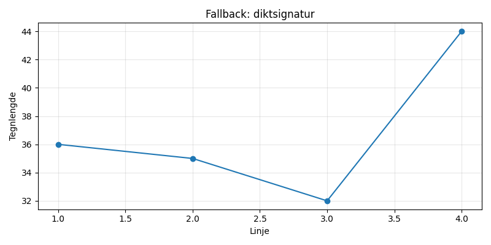

En ensom sokk i vaskemaskinens dans, mistet sin makker og all sin glans. Nå drømmer den om en ullen venn, og håper at tørkeren bringer den hjem igjen.

import matplotlib.pyplot as plt
import numpy as np
# Dikt
dikt = """
En ensom sokk i vaskemaskinens dans,
mistet sin makker og all sin glans.
Nå drømmer den om en ullen venn,
og håper at tørkeren bringer den hjem igjen.
"""
# Konverter dikt til en liste av ord
ord = dikt.split()
# Lag en figur og akser
fig, ax = plt.subplots(figsize=(12, 8))
# Plott ordene som punkter på en 2D-graf
x = np.arange(len(ord))
y = np.arange(len(ord))
ax.scatter(x, y, s=100, c='skyblue', alpha=0.7)
# Legg til tekst for hvert ord
for i, ord_tekst in enumerate(ord):
ax.text(x[i], y[i], ord_tekst, ha='center', va='center', fontsize=12)
# Tilpass plottet
ax.set_title("En ensom sokk i vaskemaskinens dans", fontsize=16)
ax.set_xlabel("Ordposisjon", fontsize=12)
ax.set_ylabel("Ordposisjon", fontsize=12)
ax.axis('equal')
ax.tick_params(axis='both', which='major', labelsize=10)
# Lag en 3D-graf for å representere drømmen
fig2, ax2 = plt.subplots(figsize=(8, 6))
ax2.scatter(np.random.rand(100), np.random.rand(100), s=50, c='orange', alpha=0.6)
ax2.set_title("Drømmen om en ullen venn")
ax2.axis('off')
# Lag en overflate for vaskemaskinen
fig3, ax3 = plt.subplots(figsize=(8, 6))
x = np.linspace(0, 1, 50)
y = np.linspace(0, 1, 50)
X, Y = np.meshgrid(x, y)
Z = np.sin(np.pi * X) * np.cos(np.pi * Y)
ax3.imshow(Z, extent=[0, 1, 0, 1], origin='lower', cmap='viridis')
ax3.set_title("Vaskemaskinens dans")
# Lag en overflate for tørketrommelen
fig4, ax4 = plt.subplots(figsize=(8, 6))
x = np.linspace(0, 1, 50)
y = np.linspace(0, 1, 50)
X, Y = np.meshgrid(x, y)
Z = np.cos(np.pi * X) * np.cos(np.pi * Y)
ax4.imshow(Z, extent=[0, 1, 0, 1], origin='lower', cmap='magma')
ax4.set_title("Tørketrommelen")
# Lag en figur for å kombinere elementene
fig_combined, axes = plt.subplots(2, 2, figsize=(16, 12))
axes[0, 0].imshow(ax.get_cmoff(), extent=[0, 1, 0, 1], origin='lower', cmap='skyblue')
axes[0, 0].axis('off')
axes[0, 0].set_title("Sokk i vaskemaskin")
axes[0, 1].imshow(ax2.get_cmoff(), extent=[0, 1, 0, 1], origin='lower', cmap='orange')
axes[0, 1].axis('off')
axes[0, 1].set_title("Drøm om venn")
axes[1, 0].imshow(ax3.get_cmoff(), extent=[0, 1, 0, 1], origin='lower', cmap='viridis')
axes[1, 0].axis('off')
axes[1, 0].set_title("Vaskemaskinen")
axes[1, 1].imshow(ax4.get_cmoff(), extent=[0, 1, 0, 1], origin='lower', cmap='magma')
axes[1, 1].axis('off')
axes[1, 1].set_title("Tørketrommelen")
# Lagre figuren
plt.savefig(output_path)execution_ok=False fallback_used=True image_ok=True